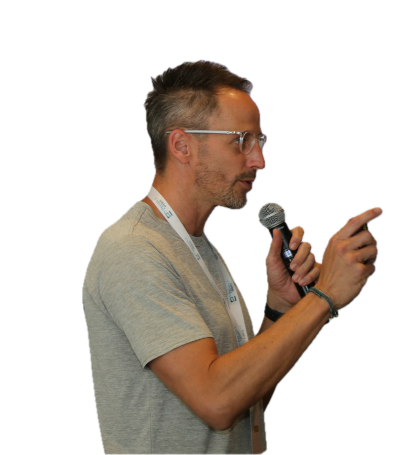

Nutrición para personas con trabajo exigente, hijos y cero tiempo. Cambios que sobreviven a las comidas de trabajo, los fines de semana y las noches sin dormir.
Pablo Quintero, PhD
Nutricionista
Doctor en Fisiología y Alimentación
Solicitar primera consulta
¿Te suena?
Enfoque
La mayoría de las personas con las que trabajo no necesitan más información: les sobra. Necesitan un sistema que aguante una semana con niños enfermos, reuniones que se alargan y fines de semana sin horarios.
Por eso no trabajo con dietas cerradas. Trabajamos con mínimos que se cumplen incluso en la peor semana, y con una alimentación que sirve para toda la casa, no un menú aparte para ti.
Así trabajo
De la primera llamada a saber gestionar todo por tu cuenta. Así es el camino, paso a paso.
En estas circunstancias, puedo orientarte para coordinar o derivar al recurso adecuado.

Sobre mí
Soy Pablo Quintero, Nutricionista y Doctor (PhD) en Fisiología y Alimentación por la Universidad de Navarra (cum laude), Licenciado en Ciencia y Tecnología de Alimentos por la Universidad Complutense de Madrid, y Full Time MBA por la Universidad de New South Wales, Australia.
Llevo más de veinte años entre investigación e industria alimentaria. Esa combinación me ha enseñado a entender cómo los alimentos impactan en nuestro metabolismo, a conocer los alimentos desde su desarrollo hasta cómo se comunican y se venden, y a separar lo que de verdad funciona de lo que solo suena bien en redes.
Hoy ayudo a personas con trabajo exigente, hijos y cero tiempo a recuperar el control de su cuerpo: el peso que cada año cuesta más quitarse, aguantar el día a base de café, entrenar sin ver cambios, la cena improvisada a las 8 de la tarde. No es falta de voluntad. Es que ningún plan que hayas probado estaba diseñado para tu vida real.
Mi método no se basa en dietas cerradas o hipocalóricas. Definimos juntos los mínimos que se cumplen incluso en la peor semana y que funcionan para toda tu casa, no un plato aparte.
Y lo vivo en primera persona: soy padre de dos niños pequeños y emprendedor, así que sé lo que es tener semanas caóticas. Lo que te propongo no sale solo de los estudios, es lo que funciona en una casa como la tuya y como la mía.
Si has probado varios enfoques sin resultados que se mantengan, aquí encontrarás algo distinto: científico, realista y con acompañamiento constante. Si sientes que es el momento de dar el paso, hablamos.
Experiencia
La primera consulta sirve para conocer tu situación, responder tus dudas y decidir si tiene sentido trabajar juntos.
Solicitar primera consulta
La consulta puede ser presencial en Santa Cruz de Tenerife y El Médano u online. El seguimiento semanal es breve y está pensado para encajar en semanas complicadas.
No. Trabajamos con lo que se come en casa para que la alimentación funcione para toda la familia, sin menús paralelos.
Precisamente eso: la mayoría de las personas con las que trabajo ya saben bastante de nutrición. El trabajo no es darte más información, sino conseguir que lo apliques de forma sostenida en tu semana real.
No. Definimos unos mínimos adaptados a tus horarios, tu familia y tus objetivos, con ejemplos y recursos prácticos cuando son útiles.
Sí. El punto de partida es tu semana y tus objetivos, y todo se adapta a cada persona.
Si tienes analíticas recientes o informes médicos relevantes, puedes traerlos. Los utilizaremos cuando ayuden a orientar decisiones nutricionales. La consulta nutricional no sustituye la valoración médica.